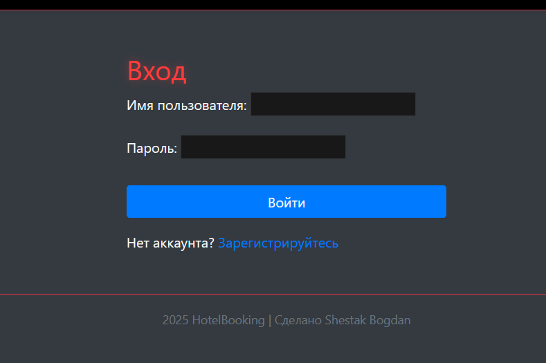
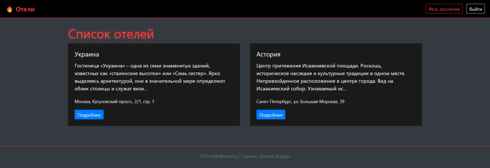
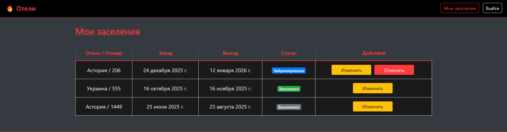
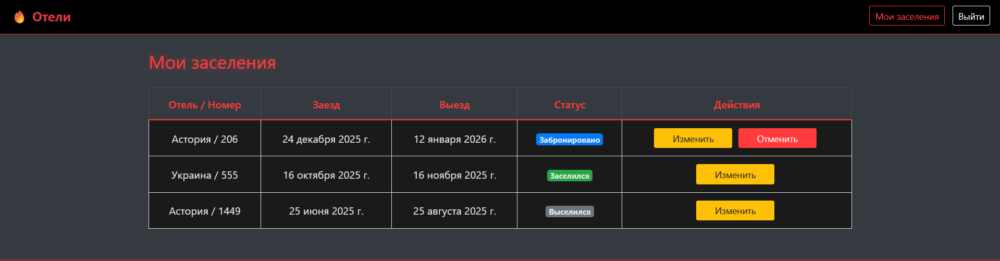

Система бронирования отеля
Задание:
Система должна предоставлять пользователям возможность просматривать список отелей, бронировать номера, оставлять отзывы о проживании и управлять своими бронями. Администратор должен иметь возможность управлять всеми сущностями через Django Admin, включая заселение и выселение клиентов.
Необходимо реализовать следующий функционал:
- Регистрация новых пользователей.
- Просмотр и резервирование номеров. Пользователь должен иметь возможность редактирования и удаления своих резервирований.
- Написание отзывов к номерам. При добавлении комментариев, должны сохраняться период проживания, текст комментария, рейтинг(1-10), информация о комментаторе.
- Администратор должен иметь возможность заселить пользователя в отель и выселить из отеля средствами Django-admin.
- В клиентской части должна формироваться таблица, отображающая постояльцев отеля за последний месяц.
Ход выполнения
Модели данных
Для начала была спроектирована основа приложения — модели данных, отражающие предметную область гостиничного бизнеса:
- Hotel — хранит информацию об отелях: название, адрес, описание.
- RoomType — содержит тип номера, его вместимость и стоимость.
- Room — конкретные номера, принадлежащие определённому отелю и типу номера.
- Reservation — информация о бронировании: пользователь, номер, даты заезда и выезда, статус.
- Review — отзывы пользователей, включающие рейтинг, текст комментария, даты проживания и автора.
Для связей использовались соответствующие поля: - ForeignKey — для отношений “многие к одному” (например, номер → отель) - ManyToManyField — для услуг, которые могут принадлежать нескольким отелям; - OneToOneField — для профилей пользователей при необходимости расширения
class Reservation(models.Model):
user = models.ForeignKey(User, on_delete=models.CASCADE)
room = models.ForeignKey(Room, on_delete=models.CASCADE)
check_in = models.DateField()
check_out = models.DateField()
status = models.CharField(max_length=20, choices=[
("reserved", "Забронировано"),
("checked_in", "Заселен"),
("checked_out", "Выселен"),
])
created_at = models.DateTimeField(auto_now_add=True)
Для удобства отображения в админке реализованы методы str, возвращающие понятные строки (например, номер комнаты или название отеля).
Формы
Были созданы кастомные формы на основе моделей для взаимодействия с пользователем:
- SignUpForm — регистрация нового пользователя.
- ReservationForm — форма для бронирования номера с проверкой корректности введённых дат.
- ReviewForm — форма для добавления отзыва с рейтингом и комментариями.
class ReviewForm(forms.ModelForm):
class Meta:
model = Review
fields = ["period_from", "period_to", "rating", "text"]
URL адреса и навигация
Для удобной навигации по сайту была реализована маршрутизация с помощью Django URL Dispatcher:
urlpatterns = [
path('', views.hotels_list, name='hotels_list'),
path('hotel/<int:pk>/', views.hotel_detail, name='hotel_detail'),
path('room/<int:room_id>/reserve/', views.reserve_room, name='reserve_room'),
path('my_reservations/', views.my_reservations, name='my_reservations'),
path('reservation/<int:pk>/cancel/', views.cancel_reservation, name='cancel_reservation'),
path('room/<int:room_id>/review/', views.write_review, name='write_review'),
path('occupants/', views.occupants_last_month, name='occupants'),
path('signup/', views.signup, name='signup'),
]
Была реализована логическая навигация между страницами с кнопками "Назад", "В профиль", "Все задания" для удобства пользователей.
- “Войти / Выйти”
- “Мои бронирования”
- “Регистрация”
- “Забронировать”
- “Оставить отзыв”
Представления
Логика работы приложения реализована с помощью Function Based Views с использованием декораторов для контроля доступа:
- @login_required - ограничивает доступ неавторизованным пользователям
- @user_passes_test - для проверки прав администратора
Основные views включают: - list — вывод списка всех отелей - detail — детальная информация об отеле, доступные номера, отзывы гостей - reserve_room — создание нового бронирования - my_reservations — просмотр, редактирование и отмена собственных броней - write_review — добавление отзывов о проживании - occupants_last_month — генерация таблицы постояльцев за последний месяц
@login_required
def reserve_room(request, room_id):
room = get_object_or_404(Room, id=room_id)
if request.method == "POST":
form = ReservationForm(request.POST)
if form.is_valid():
reservation = form.save(commit=False)
reservation.user = request.user
reservation.room = room
reservation.save()
return redirect('my_reservations')
else:
form = ReservationForm()
return render(request, 'hotels/reserve.html', {'form': form, 'room': room})
Панель администратора
Все модели зарегистрированы в Django Admin, что позволяет администраторам:
- добавлять и редактировать отели, номера и бронирования
- заселять и выселять клиентов
- управлять отзывами пользователей
- просматривать статистику по постояльцам

Пользовательский интерфейс
Интерфейс выполнен с использованием Bootstrap 4 и кастомного CSS в тёмной цветовой палитре с красными акцентами. Основные элементы интерфейса:
- Тёмная тема — основной фон и таблицы с мягким контрастом
- Красные заголовки и кнопки — визуальные акценты для ключевых действий
- Адаптивный дизайн — корректное отображение на любых устройствах
- Улучшенные таблицы — отображают брони, отзывы и постояльцев
Ключевые функции
- Регистрация и авторизация пользователей.
- Просмотр отелей и доступных номеров.
- Создание, редактирование и удаление бронирований.
- Добавление отзывов с рейтингом и текстом.
- Администрирование через Django Admin.
- Автоматическая таблица постояльцев за последний месяц.


 

Вывод
В ходе лабораторной работы была успешно разработана система бронирования отелей на Django. Были реализованы все основные функции: регистрация пользователей, просмотр и бронирование номеров, редактирование и удаление броней, добавление отзывов и административное управление через Django Admin.
Проект продемонстрировал уверенное владение Django ORM, системой шаблонов, формами, маршрутизацией и Bootstrap-оформлением. Система получилась удобной, логичной и визуально приятной, полностью соответствующей требованиям задания.